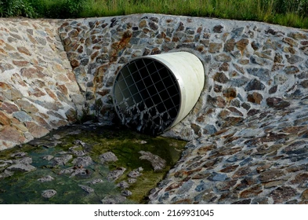
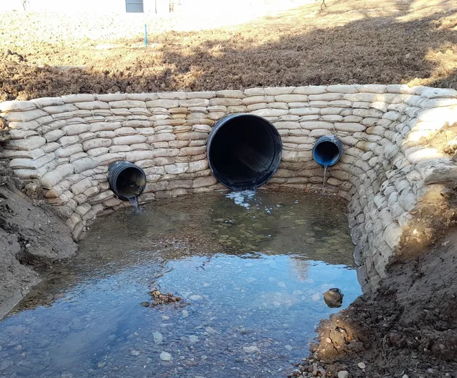

üåæ Earthen Nala Band:- An earthen nala band is an embankment built using soil and stones to block runoff in small streams or ‚Äúnalas‚Äù. It reduces water speed, promotes groundwater recharge, and supports vegetation. ✅ Benefits: Low cost, eco-friendly, perfect for watershed management.

